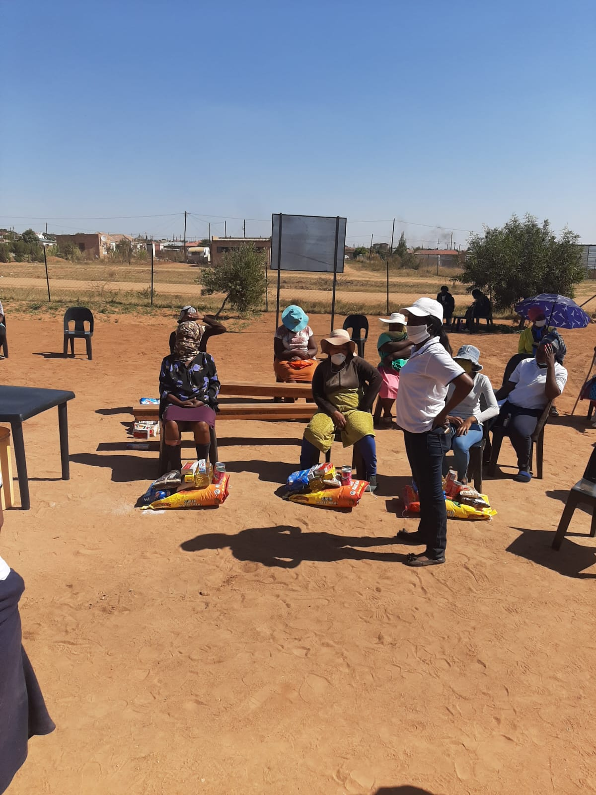

SEPHAPOSE

Caring for our elderly.
Building a better future.
About Sephapose Old Age Care Centre
Caring with dignity, compassion and respect.
Who We Are
Sephapose Old Age Care Centre is an organisation serving elderly people in the Ga-Mothapo Ga Magowa RDP community near Polokwane, Limpopo.
The Limpopo Department of Social Development lists Sephaphose Old Age Centre as a Service Centre for Older Persons .
The organisation is listed under NPO number 098-244 .
Our work is focused on supporting older persons and contributing to their health, wellbeing, dignity and quality of life.
Where We Are
Sephapose Old Age Care Centre is located in Sephaphose Village, Ga-Mothapo, in the Limpopo Province of South Africa.
The Limpopo Department of Social Development records the physical location as Sephaphose Village, Ga-Mothapo Ga magowa RDP.
The stand number is currently not available.
Find Us on the Map
Supporting Older Persons
Information published by the Hollywood Foundation describes Sephaphoshe Old Age Centre as providing essential care to elderly people in the Ga-Mothapo community near Polokwane.
The centre has been described as supporting the healthcare and wellbeing of its beneficiaries.
The centre has also assisted elderly beneficiaries with exercises and provided meals.
A sewing project has also been reported as an activity that helps keep elderly members of the community active and engaged.
They are also in farming and gardening activities to keep the elderly active and engaged.

Community Support
The work of Sephapose has also received support from organisations and community partners.
During the COVID-19 pandemic, Hollywoodbets and the Lighthouse Foundation supported Sephaphoshe Old Age Centre through the Hollywoodbets "Brighter Future" project.
The published report states that Hollywoodbets donated R17,500 to the centre.
The donation was used to provide food parcels for 42 people under the centre's care.
This support helped the centre continue its feeding efforts during a difficult period.
Hollywoodbets and Lighthouse Foundation Support
Hollywoodbets reported that it was important to support organisations caring for vulnerable members of the community during the COVID-19 pandemic.
The published report also explains that the centre relied on donors to help with its operations.
Caroline Hine, who was identified in the report as the manager of the centre at the time, expressed appreciation for the support received.
The support helped the centre provide food to beneficiaries affected by the pandemic.

Our Story
Sephapose Old Age Care Centre has developed as part of the community's support network for elderly people in Ga-Mothapo.
records and reports show that our centre has been involved in services for older persons and has received support from community and corporate partners.
The available public information also shows the importance of continued support for the centre and the elderly people it serves.
Our next step is to build on this foundation and create a stronger future for elderly people in the community.
Our Mission
Our mission is to provide compassionate and respectful support to elderly people while promoting their dignity, wellbeing, safety and quality of life.
We want every elderly person connected to our centre to feel valued, respected and supported.
Our Vision
Our vision is to develop a modern, safe and welcoming environment where elderly people can receive care, participate in activities and remain connected to their community.
Our Proposed New Old Age Care Centre
Building a better future for the elderly.
Sephapose Old Age Care Centre is working towards the development of a new, purpose-built old age care centre for elderly people in the Ga-Mothapo community.
The proposed development is intended to provide a safer, more comfortable and more suitable environment for elderly people while expanding the support available to the community.
The project is a proposed development and the concept shown on this website should not be understood as an existing completed facility.
Proposed Centre Concept
The image below represents a concept for what the proposed new Sephapose Old Age Care Centre could look like.

Proposed New Sephapose Old Age Care Centre - Concept Design
What We Want to Build
The proposed centre is envisioned as more than just a building. It is intended to become a supportive community for elderly people.
| Proposed Facility | Purpose |
|---|---|
| Elderly Accommodation | Comfortable and safe living spaces for elderly residents. |
| Healthcare and Wellness | Dedicated spaces to support the health and wellbeing of elderly people. |
| Activities Centre | Spaces for social activities, recreation and community programmes. |
| Gardens and Outdoor Areas | Accessible outdoor spaces where elderly people can relax and enjoy nature. |
| Meals and Dining | Dedicated areas to support meal preparation, dining and nutrition. |
| Community Spaces | Areas where residents, families, volunteers and community members can interact. |
| Security and Reception | A secure entrance and reception area for residents, visitors and staff. |
Why This Project Matters
The existing public information about Sephapose demonstrates that there is an established need for services supporting elderly people in the Ga-Mothapo community.
The centre's reported activities include healthcare and wellbeing support, exercises, meals and a sewing project.
A new purpose-built facility would provide an opportunity to strengthen these services and create additional spaces designed specifically around the needs of elderly people.
The project also aims to create opportunities for community involvement, volunteers, partnerships and employment as the development grows.
Our Values
| Value | What It Means |
|---|---|
| Care | Providing kindness, support and compassion. |
| Dignity | Treating elderly people with dignity and recognising their worth. |
| Respect | Listening to and respecting the individuality of every person. |
| Community | Working together with families, volunteers and community partners. |
| Compassion | Responding to the needs of elderly people with understanding and kindness. |
Support the New Sephapose Old Age Care Centre
We are seeking partnerships and support to help turn the proposed new centre into reality.
Businesses, government departments, foundations, community organisations, healthcare professionals, volunteers and individual supporters can all play a role in helping us build a better future for elderly people.
Support may include funding, building materials, professional services, equipment, donations, volunteer assistance or strategic partnerships.